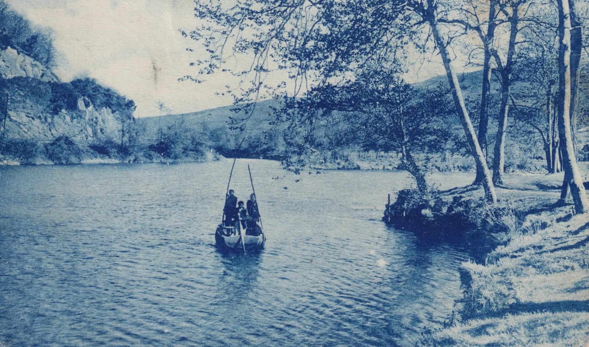

Asón · Agüera · Trasmiera
La memoria sumergida
Un recorrido por el pasado hidráulico de una comarca donde el agua ha moldeado el paisaje, el trabajo y la memoria colectiva.
Comenzar el recorridoPesca del salmón en el río Asón · Postal, colección privada
El proyecto
El agua deja huella. También guarda historias.
Ríos, manantiales y mareas han dado forma a la vida de la comarca Asón-Agüera-Trasmiera. Molinos, fuentes, presas y balnearios cuentan cómo sus comunidades aprendieron a convivir con el agua y a transformar su fuerza.
En el marco de las Jornadas Europeas de Patrimonio 2026, este itinerario recorre diecisiete municipios para descubrir ese legado —y las historias que corren el riesgo de desaparecer cuando sus lugares quedan olvidados.
El itinerario
Sigue el curso de la memoria
Explora el mapa, avanza por sus paradas y descubre el patrimonio hidráulico que conecta pueblos, generaciones y paisajes.
Un territorio, muchas voces